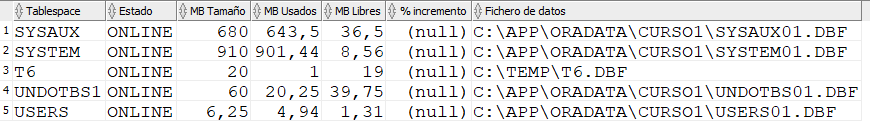
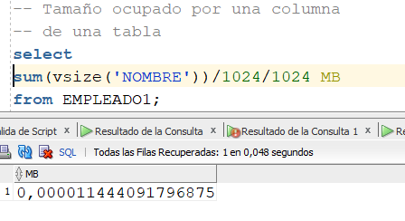
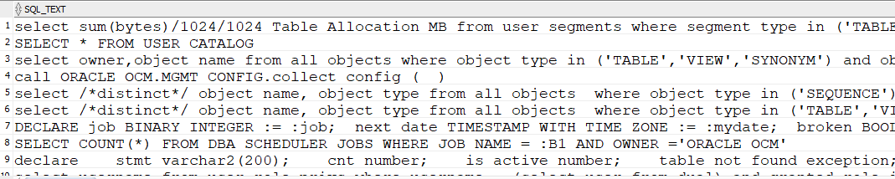

Consultas útiles para el DBA
La labor del DBA exige sacar provecho de la información que hay en el diccionario de datos. Generalmente, el DBA va construyendo una biblioteca de consultas útiles que le sirven para fines específicos. A continuación se muestran una serie de consultas útiles para la labor del DBA.
 |


